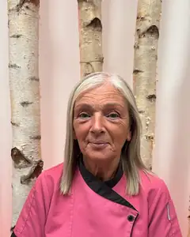

Nursery manager and safeguarding officer
Kerri Miller
- BA Childhood Practice
21 people work at Heads of Ayr Nursery. Every child has a key worker from this team.
When your child starts, we give them a key worker. This person is responsible for your child's care and wellbeing while they are with us.
Tell your child's key worker about anything your child needs. They watch how your child plays and learns, plan the next steps and write regular reports for you.
If you are worried about how your child is getting on, speak to our managers first. They will set up a talk with the key worker.
“The staff are professional, knowledgeable and friendly and really do put the children at the centre of their learning.”
Kerri runs the nursery for its owners, the Rankin family. Kerri is also our safeguarding officer.
Nursery manager and safeguarding officer
Depute manager
Senior team manager
Fern and Steph are our room leads. Ask us which room each of them leads.
Early years practitioner, room lead
Early years practitioner, room lead
13 early years practitioners care for the children every day. Your child's key worker will be one of our team.
Rochelle is our admin co-ordinator. Lindsey, our chef, plans and cooks our meals.
Admin co-ordinator

Nursery chef
Nursery apprentice
Yes. Every member of staff holds a full PVG Scotland disclosure certificate. It is issued before they start work or a placement with us.
In the Sunshine Room (2 to 3 year olds) there is 1 adult for every 5 children. In the Rainbow Room (3 to 5 year olds) there is 1 adult for every 8 children.
Kerri, our nursery manager, leads on child protection. All our staff have child protection training, and we follow South Ayrshire's child protection guidelines.
Phone to check. You can ask about any member of our team.
A member of staff trained in first aid deals with minor accidents. We always tell you about them, and ask you to sign the record at pick-up.